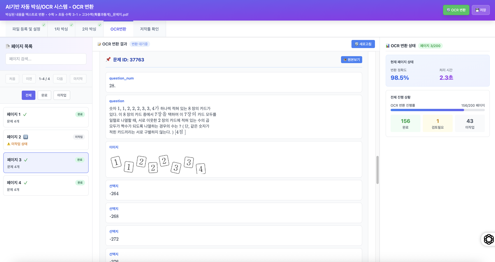
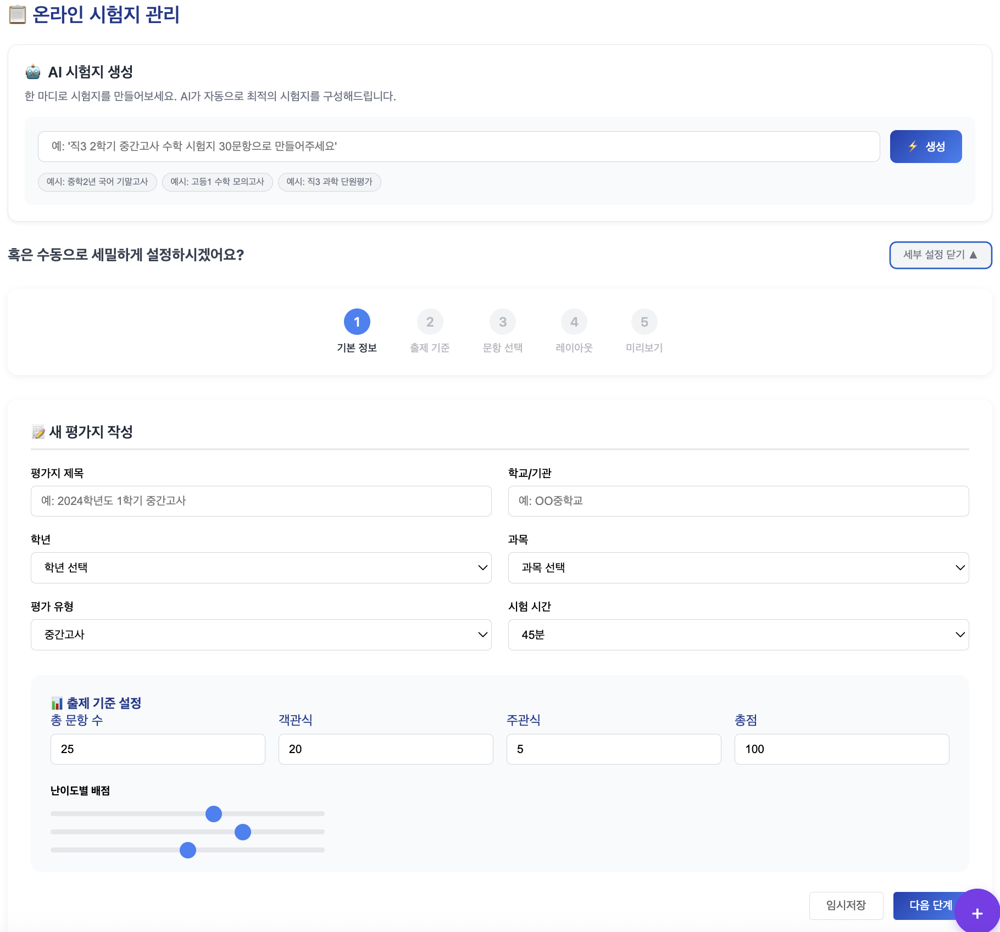

전국 초/중/고
기출시험지 관리
PDF, 스캔 이미지
대량 수집
→
AI
OCR 및
온라인 콘텐츠화
문항 구조 자동 분석
AI OCR + AI 검수
→
AI
AI 문제은행 구축
AI 메타태깅
및 스마트 검색
→
AI
콘텐츠 확장
AI 쌍둥이문제
힌트, 해설생성
→
서비스 확장
교재 출판, 온라인서비스
브랜드별 연동
AI기반으로 문항 구조를 자동 분석하고( 발문·지문·이미지·보기 등) OCR을 통해 텍스트와 수식을 디지털 데이터로 변환합니다.
🔄 실제 구현 화면
🚀 실시간 시연 보기 - AI 디지털라이징 도구
클릭하여 실제 AI OCR 처리 과정을 직접 체험해보세요
AI 문항 구조 분석

AI가 문서를 분석하여 문제 영역을 인식하고 문제 요소(발문,지문,이미지,보기 등)을 구별하여 처리하는 단계 📸 클릭하여 크게 보기
OCR 변환 처리 화면

AI OCR을 통해 텍스트, 수식, 그래프를 디지털 텍스트로 변환하고 AI를 활용하여 품질 검수 📸 클릭하여 크게 보기
전국 초/중/고
기출시험지 관리
PDF, 스캔 이미지
대량 수집
→
AI
OCR 및
온라인 콘텐츠화
문항 구조 자동 분석
AI OCR + AI 검수
→
AI
문제은행 구축
메타 AI 자동 태깅
및 스마트 검색
→
AI
콘텐츠 확장
AI 쌍둥이문제
힌트, 해설생성
→
서비스 확장
교재 출판, 온라인서비스
브랜드별 연동
구축된 문제은행과 콘텐츠를 활용하여 각각의 브랜드에서 활용 가능하며, 온라인 시험지 제작 서비스와 오프라인 교재 자동 생성 기능을 제공하는 다양한 교육 서비스로 확장합니다.
📚 예시 화면
교재 출판

문제은행 콘텐츠를 활용한 오프라인 교재 자동 생성 시스템
온라인 시험 서비스

난이도, 출제 범위, 문제 수 등 세부 맞춤 📸 클릭하여 크게 보기
브랜드별 활용

브랜드별 문제 검색 및 맞춤형 교육 서비스 제공 📸 클릭하여 크게 보기
×